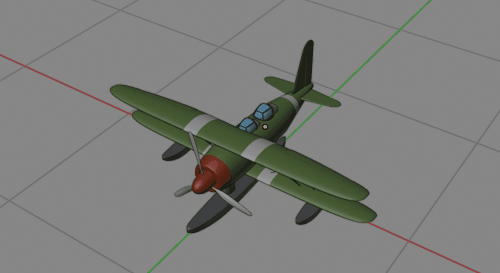
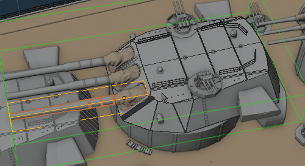
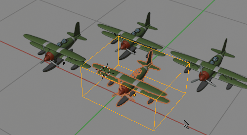
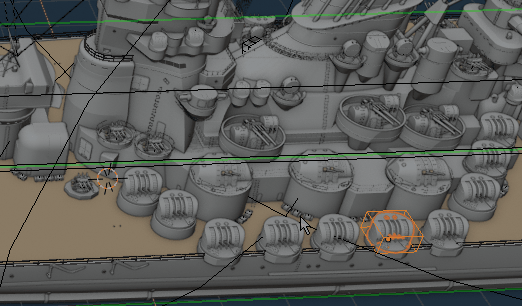
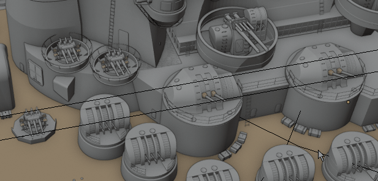
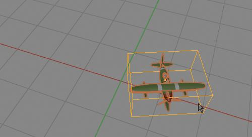
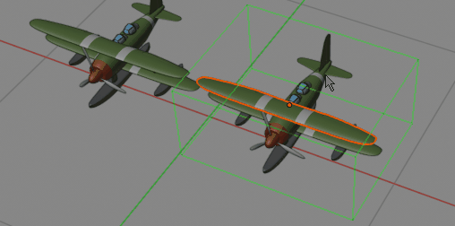

Basic Usage¶
Basic Usage¶
To create new group:
- select objects you want to join,
- press Ctrl+X to open Pie Menu > select:
Create Group.
You will notice selected objects are now merged into one group, and cannot be selected individually.
To edit group components you have to open it with Edit Group button. Green box will appear around edited group objects (color can be changes in addon preferences). Any modifications performed on object that are member of group, will be saved after you press 'Close Group' button.
You can add or remove objects from group, while you have group opened, using Add/Remove from group buttons. Note: If you remove all objects from group, while editing it, group will be deleted after pressing 'Close Group' button.
Create Group¶

Joins selected objects together into collection instanceJoins selected objects in one, and creating CollectionInstance from them. After using this function you can press F9 to change group name or change group pivot location (median point or 3d cursor location).
Edit Group¶
You can perform modifications to CollectionInstance, add/remove objects from it, after pressing this button. You will notice green box around objects that are members of group. Also in bottom left corner, there will be info with name of currently edited group name.
NOTE: Color of edited group can be customized in addon preferences -> View Tab. You can set it to be completely transparent if you want.
Add/Remove from Group¶
Add/Remove from Group – while you are in edit group mode you can press those buttons to add/remove selected objects from/to group. Changes will be saved after Close Group.
Close Group¶

After editing group merges objects back togetherSaves changes performed while you were in edit group mode, merges objects back together.
Dissolve¶
Split Group of objects into individual components
Very similar to build in blender operator “make duplicates real (shift+ctrl+A)”. It splits Grouped object into separate, individual mesh objects.
- Depth - Specifies how deep the group hierarchy will be dissolved. Set to 0 for infinite depth (default: 1).
-
Hierarchy:
- Flat - Dissolves groups into individual objects without preserving the hierarchy structure.
- Use Empties - When enabled, dissolved groups are represented as empty objects linked through parent-child relationships. This preserves the group hierarchy, allowing you to see which objects were originally grouped together.
- Use Collections - When enabled, dissolved groups are represented as collections. This preserves the group hierarchy, allowing you to see which objects were originally grouped together.
-
Apply Modifiers - When GropPro: Radial or Linear array modifiers are found, they will be dissolved into individual objects.
Group from Selection¶
Creates new group from selected empties object hierarchy. Could be used to convert imported Sketchup components to Blender Groups (collections)
- Fix Sketchup object orientation - When enabled, the orientation of the Sketchup object is corrected to match Blender's coordinate system. Not needed for other objects.
Initialize groups¶
When you copy a Group object from one blend file to another (using Ctrl+C, Ctrl+V), you may notice that pasted Groups appear messy - all objects that make up the Collection are visible. To clean up the scene after pasting a new Group, select all the objects and press 'Initialize groups'. This will hide all unnecessary objects, leaving only the relevant Collection Instances.
Note: By default, GroupPro overrides the paste (Ctrl+V) hotkey to use the 'Initialize groups' function. If you want to use the default Blender paste behavior, go to GroupPro preferences > Hotkeys and disable the 'Paste' hotkey override.
Set group origin¶

Change origin of selected group instance, while maintaining position of other instancesChanges pivot point of selected CollectionInstance, while preserving position all other instances. This works only on active object.
- 3d cursor
- Objects Center
- Bounding Box Bottom
- Bounding box center
Delete Group¶

Removes group and all its instances permanently from sceneDeletes group with subgroups and objects that this group is made of permanently from blender file. After using this operation you won't have access to deleted Group. In contrast using 'delete' key on keyboard, deletes group from scene, but you can still access and add back group from:
- Shift+A → 'Collection instances” menu.
Pick Group¶

Quickly open nested sub collection withPick Group
If you have made group from sub groups, which have sub-groups, opening those nested sub-sub-groups may be time-consuming. Pick group will let you open group which is directly under cursor, no matter how much nested it is inside parent groups.
CleanUP¶
Cleanup unused groups - groups that are currently not being linked to scene. Useful when there are lots of Collection Instances under “Shift+A” -> Collection Instances, and you are not using them. This command will delete groups only if they are not used on scene.
Flip selection¶

clones and mirrors object around chosen axis. After using this function you can press F9, to change axis of mirroring, pivot point (scene center, or 3d cursor), or disable duplication. This button was developed, because creating mirrored group instance is buggy, so I created 'Flip selection' button.
Make unique¶

Makes selected Group separate instance. Use it when you want to customize look of one Group, without affecting look of other instances that are already on scene.
- maxDepth - Maximum depth for which unique groups will be created. 0-inifinite depth, default=1
- De-instance meshes - do you want new collection instance objects to be instanced or copies
- De-instance materials - do you want new collection instance materials to be instanced or copies
Note: When you use Shift+D hotkey, to copy group - i will be un-instanced from original group automatically.